This is my belated write-up for Zero 2 Automated's Challenge #3 – Oski Stealer String Decryption.
The goal was to develop an automated string decryptor for the final payload. The sample is initially packed with a .NET packer which is why I was interested in this challenge as I wanted to get more reps with .NET samples.
First Stage SHA256: 707adf85c61f5029e14aa27791010f2959e70c0fee182fe968d2eb7f2991797b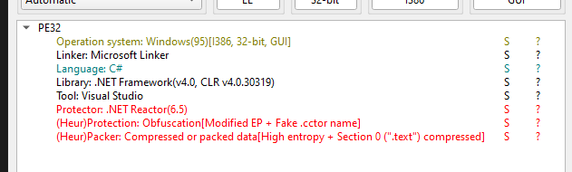
Initial triage showed it uses a known obfuscator, so I started by trying to run it through de4dot, which successfully produced a cleaned version.
With .NET samples, I usually start by looking at cross-references to the Assembly class, since many samples use this to load additional payloads. Given that this sample is packed, it's definitely worth checking out.
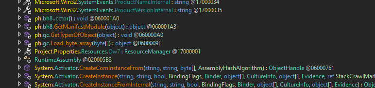
Looking at references to Assembly, there are four calls to methods from the class from non-library/runtime code.
The most interesting one is a method I’ve named Load_byte_array(), which is just a wrapper around AppDomain.CurrentDomain.Load().
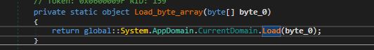
Looking at the references to Load_byte_array() shows a method I named retrieve_and_dec_rsrc() as it can clearly be seen getting the resource BayesMe, then calling a decryption function on the resource.
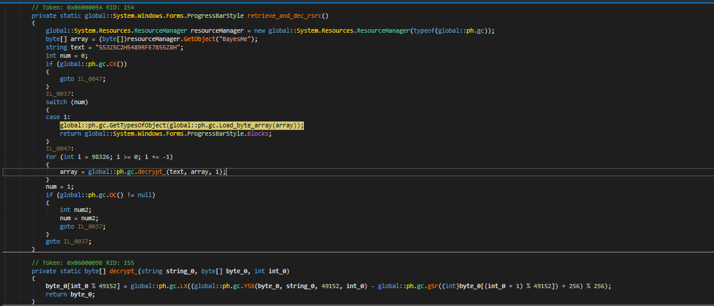
This seemed like a good chance to dynamically retrieve the decrypted resource, so I set a breakpoint after the call to the decryption function, then dumped the local variable array that held the result.
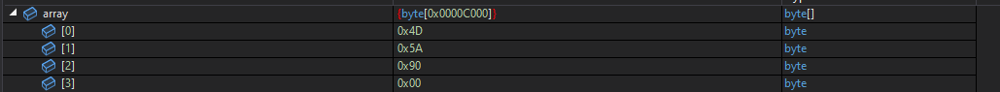
This appeared to be a valid executable file as the MZ magic was seen.
Stepping out of the method showed immediate call to Invoke() and Run(), verifying it is not a dummy file and is actually invoked.
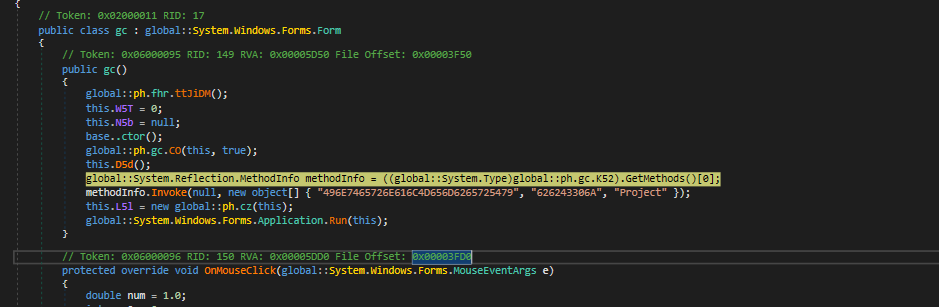
The local variables debugging Window showed that the methodInfo variable is a reference to the method EhgUZIvRw().
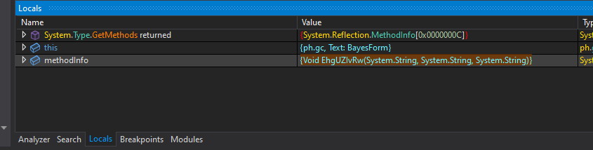
Searching for this method showed it belongs to the loaded assembly FuncAttribute.dll
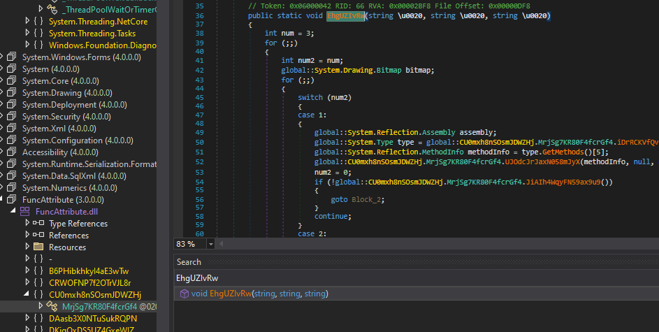
This Assembly looked decently obfuscated as well, so I tried running it through de4dot. It was not recognised as a known obfuscator so I skipped cleaning and just analysed it as-is.
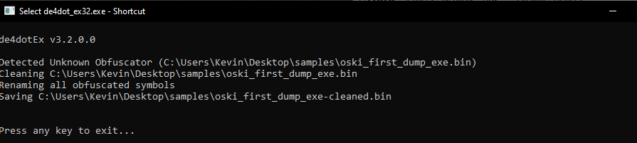
A quick look inside the methods it calls show that this method appears to load another assembly and invoke a method from it.
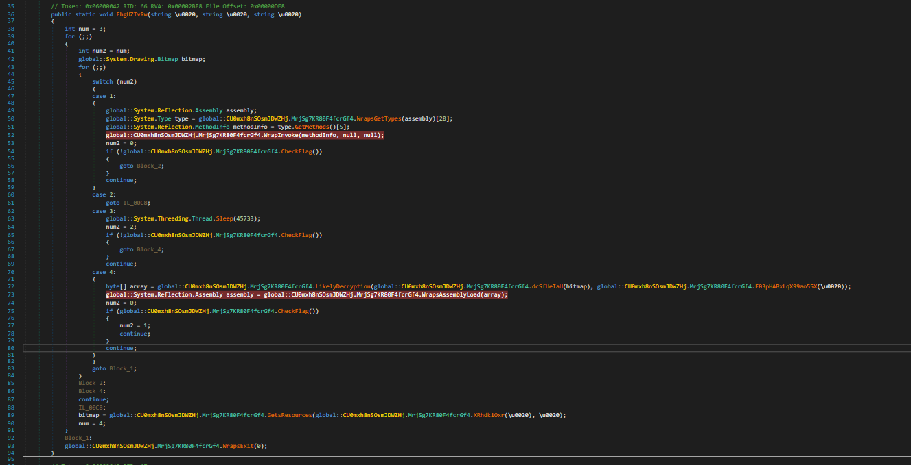
I set breakpoints on the Invoke and AssemblyLoad methods and ran the sample. This showed it loading another assembly and calling the method fQRwCeWyVS() from it.
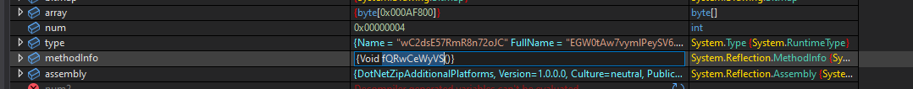
I dumped the binary and ran it through de4dot — which detected it as a Reactor protected sample, which it managed to successfully clean.
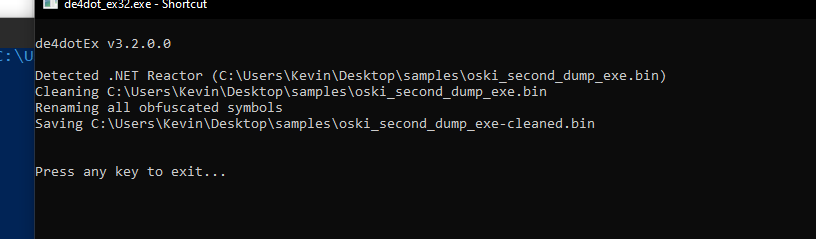
To make dynamic analysis easier, I ran the sample again and overwrote the variable passed to LoadAssembly with the cleaned de4dot sample. I did this by opening the cleaned sample in CyberChef and running the recipe 'to hex'. Then in the debugging context I opened the array variable in the memory view and pasted over it.
This now showed the call to Invoke is targeting the method smethod_10()
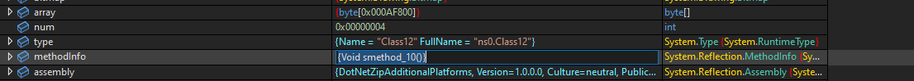
This made the decompilation a lot cleaner:
Cleaned

vs
Original
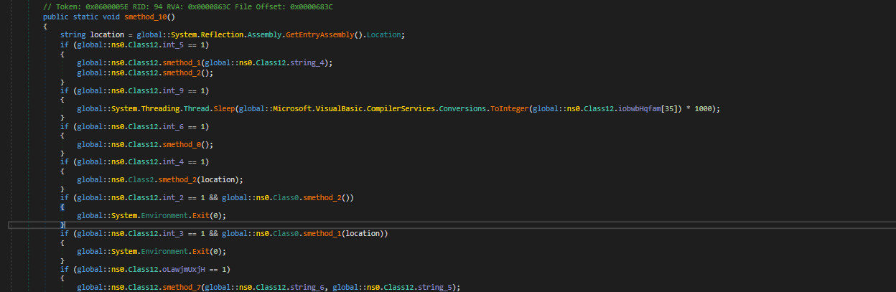
I did some basic markup and which showed this sample had variety of functionalities, however it would use hardcoded flags to determine which components to actually execute.
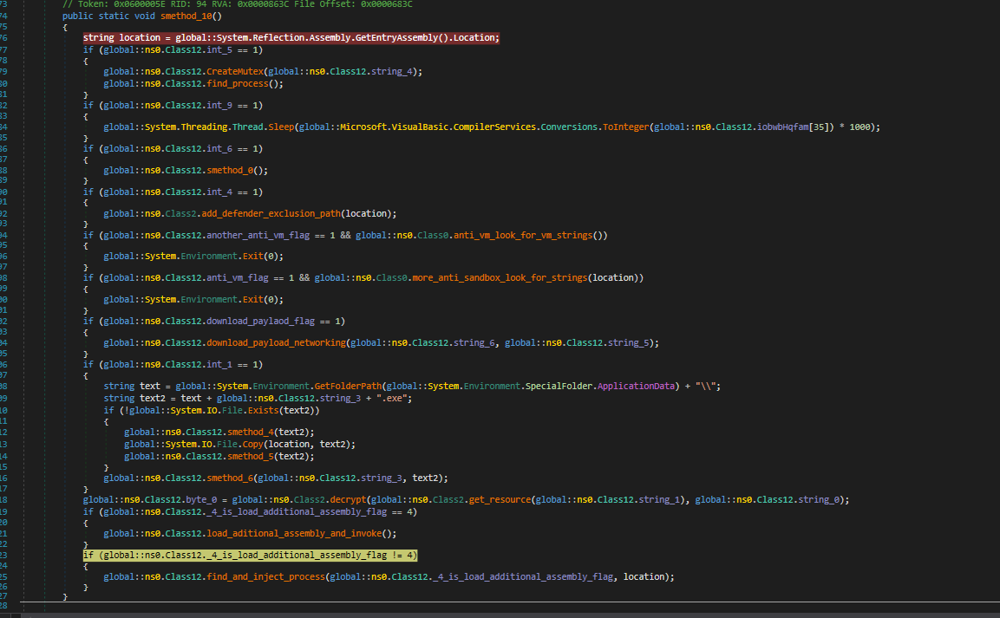
These flags are set by the Class constructor /cctor.
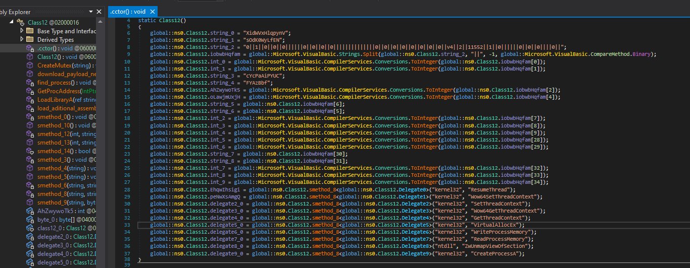
Stepping through the program shows that this specific sample calls find_and_inject_process().
This method uses unmanaged code to retrieve Win APIs to make the injection possible.
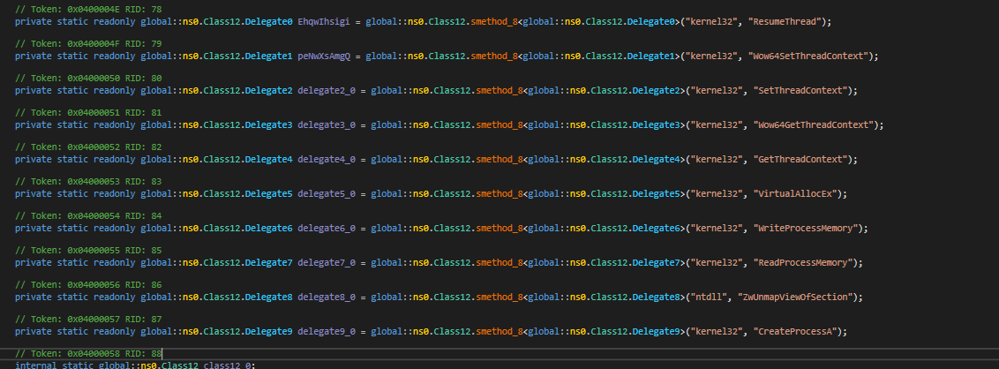
Of most interest within this method is the call to WriteProcessMemory, as the variable byte_1 will contain a buffer that is injected into the victim process. By setting a breakpoint on WriteProcessMemory, I saw that the buffer being injected is a C++ compiled executable, which is presumably the final payload.
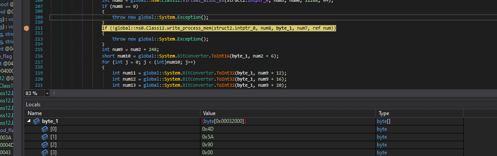
I began analysis by taking a quick look in PeStudio. This showed what appeared to be a large amount of encrypted strings in the .rdata section.
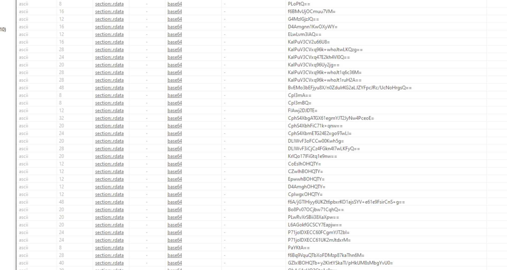
Since the goal is to decrypt the strings, I started by going to the .rdata section in IDA and finding cross references to the strings.
The encrypted strings can easily be identified in IDA.
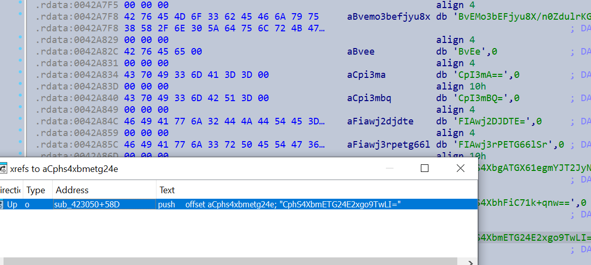
It looks like they are all passed to a central decryption function decrypt_strings().
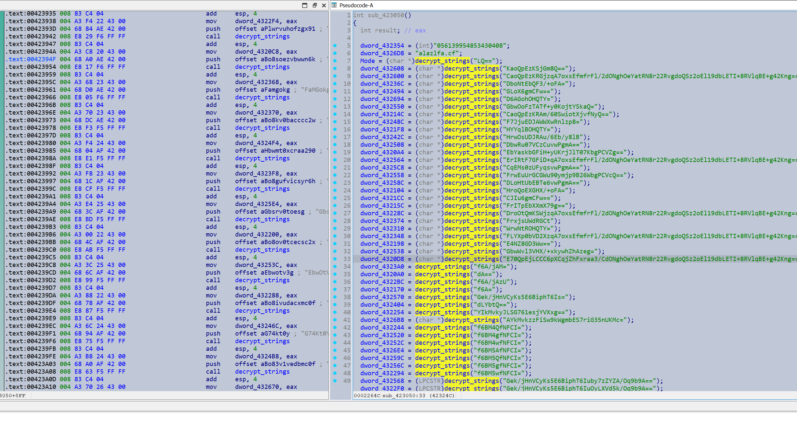
Although not the point of the challenge I did develop an IDA debugging script to immediately resolve all the strings, with no real reverse engineering required.
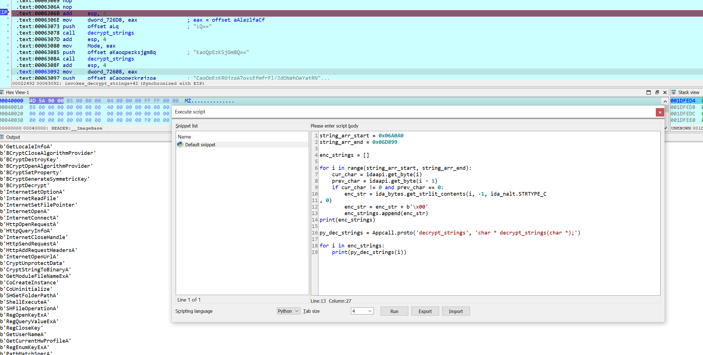
Back to the actual challenge.
The encrypted strings look to be base64 encoded, however inputting them into a base64 decoder did not return anything legible. My initial hunch was that this could be a custom base64 encoding so I took a quick look around to try and find a modified base64 index string.
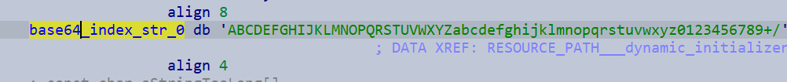
It does appear the sample uses a standard base64 index string, so this isn’t a custom variant. (The string above is referenced as a global within the decryption function).
Looking deeper into the decryption function, showed lots of functions relating to C++ std::string handling such as small string optimization operations.
As such I create a C++ std::string struct in IDA to help analyze this.
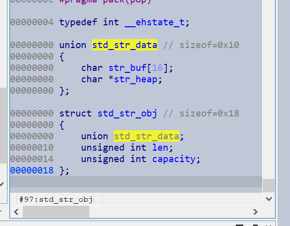
This made the analysis of this function much easier, and the decryption flow became much clearer. The function base64-decodes the string, then passes it to another function that I initially labelled looks_like_decryption().
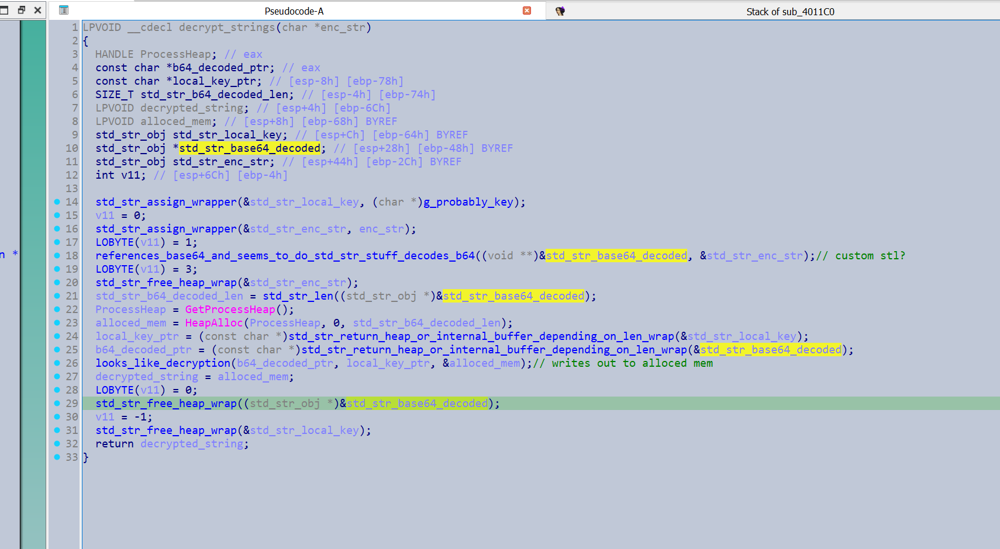
After taking a closer look at looks_like_decryption(), it was unmistakable as RC4. I should have looked closer earlier, as that would have saved me from reversing all the std::string handling.
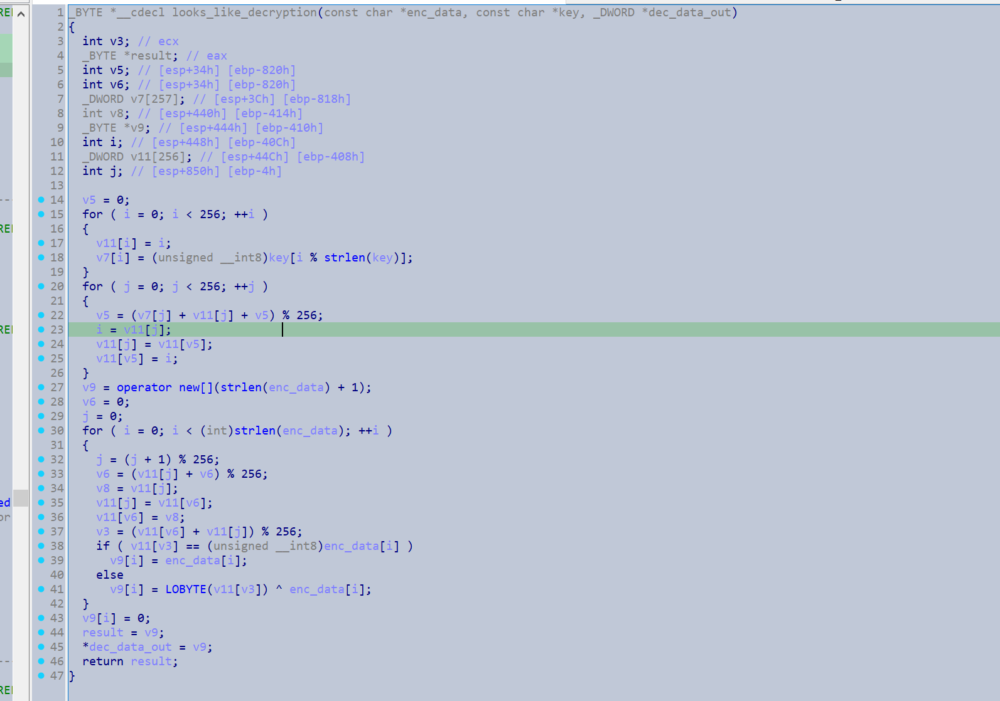
I verified my analysis with Cyberchef.
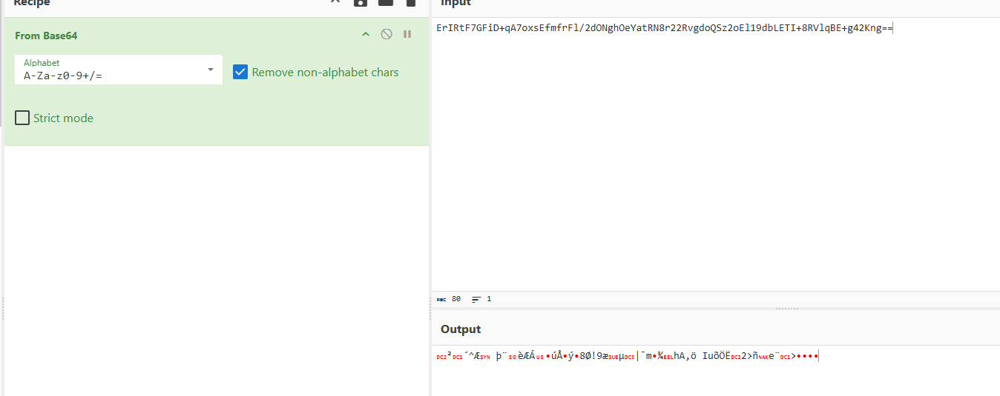
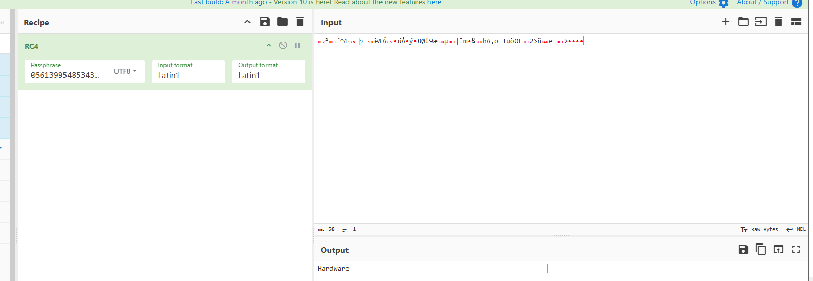
I moved on to writing a script that would extract and decrypt the strings automatically. From my analysis:
With this it might be possible to develop regex to extract the RC4 key, and extract the encrypted strings by retrieving all the arguments to the most called function in the binary. This should be able to run headlessly with IDA, however I could not try it as I only have IDA home.
With some proof of concept code I can successfully extract the RC4 key from this sample with regex.
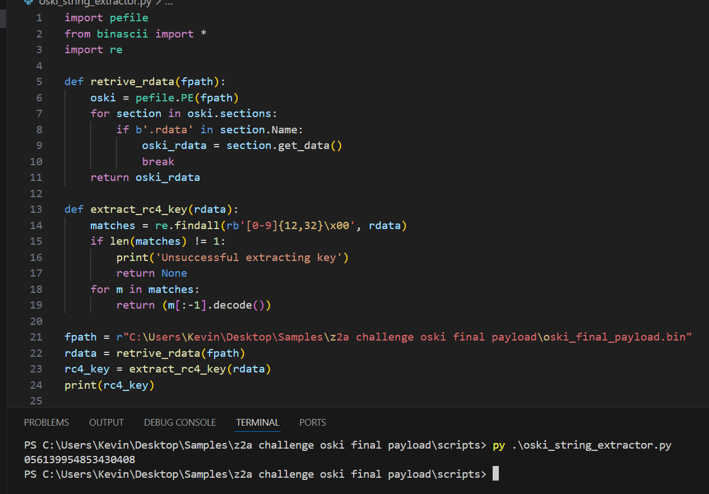
I can also identify the decryption function by using IDA retrieve the function with the highest cross reference count.
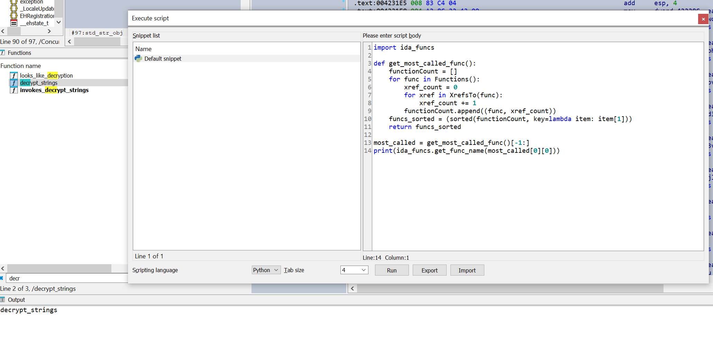
The final developed script can be seen working below, and should be able to be integrated into a fully automated workflow.
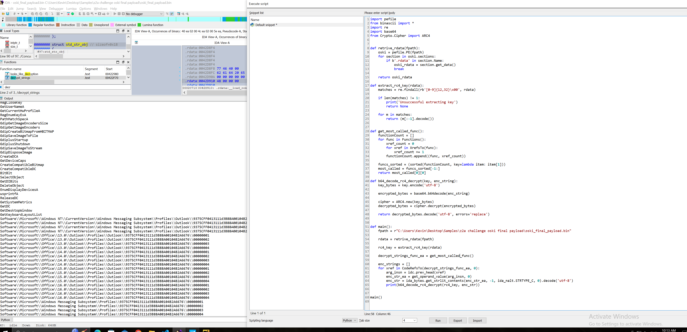
The actual code is shown below:
import pefile
from binascii import *
import re
import base64
from Crypto.Cipher import ARC4
def retrive_rdata(fpath):
oski = pefile.PE(fath)
for section in oski.sections:
if b'.rdata' in section.Name:
oski_rdata = section.get_data()
break
return oski_rdata
def extract_rc4_key(rdata):
matches = re.findall(rb'[0-9]{12,32}\x00', rdata)
if len(matches) != 1:
print('Unsuccessful extracting key')
return None
for m in matches:
return (m[:-1].decode())
def get_most_called_func():
functionCount = []
for func in Functions():
xref_count = 0
for xref in XrefsTo(func):
xref_count += 1
functionCount.append((func, xref_count))
funcs_sorted = (sorted(functionCount, key=lambda item: item[1]))
most_called = funcs_sorted[-1:]
return most_called[0][0]
def b64_decode_rc4_decrypt(key, enc_string):
key_bytes = key.encode('utf-8')
encrypted_bytes = base64.b64decode(enc_string)
cipher = ARC4.new(key_bytes)
decrypted_bytes = cipher.decrypt(encrypted_bytes)
return decrypted_bytes.decode('utf-8', errors='replace')
def main():
fpath = r"C:\Users\Kevin\Desktop\Samples\z2a challenge oski final payload\oski_final_payload.bin"
rdata = retrive_rdata(fpath)
rc4_key = extract_rc4_key(rdata)
decrypt_strings_func_ea = get_most_called_func()
enc_strings = []
for xref in CodeRefsTo(decrypt_strings_func_ea, 0):
arg_insn = idc.prev_head(xref)
enc_str_ea = get_operand_value(arg_insn, 0)
enc_str = ida_bytes.get_strlit_contents(enc_str_ea, -1, ida_nalt.STRTYPE_C, 0).decode('utf-8')
print(b64_decode_rc4_decrypt(rc4_key, enc_str))
main()